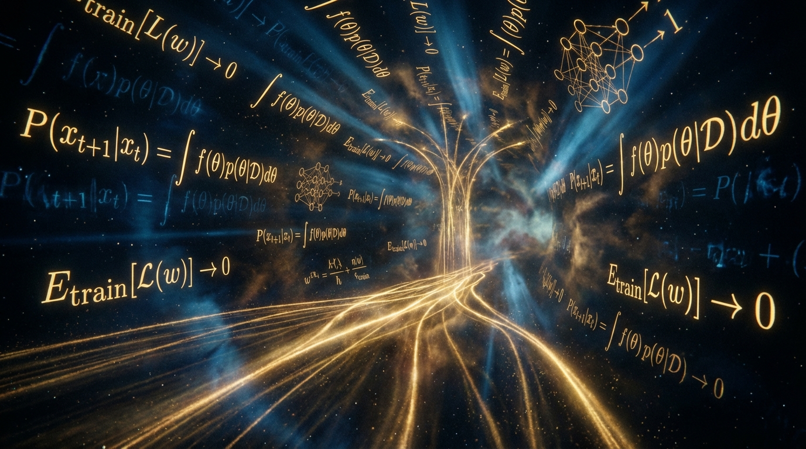

考古 AI 的
黃金年代
從 2017 Transformer 到 2023 GPT-4
用白話文解析那些改變世界的經典論文

LLM 視覺化完整教學
從 nano-gpt 的 85,000 個參數開始，逐步深入理解 GPT 的運作原理。 完整解析 Embedding、Self-Attention、Multi-Head Attention、Layer Normalization、 Feed-Forward Network、Softmax 等核心機制。

現代 NLP 演進三部曲
探索改變 NLP 世界的關鍵論文：從 Transformer 架構革命， 到 BERT 的雙向理解，再到 GPT-3 的規模奇蹟， 最後以 InstructGPT 實現人類對齊。
Prompt 提示詞的範式革命
從 GPT-3 的驚人發現，到 2021 年「第四範式」的理論正名。 深入理解 Prompt 如何從一種黑魔法技巧， 演變成現代 AI 的核心開發範式。
多模態評測三部曲
探索三篇震撼研究：MME-RealWorld、MMMU-Pro、RBench-V。 揭示多模態 AI 在真實場景、嚴格評測、視覺推理中的三大盲點。
⏳ AI 發展黃金年代
2017 Transformer
Google Brain / Google Research
拋棄 RNN，用純注意力機制奠定現代 LLM 基礎。現代深度學習的基石，所有 LLM 的架構基礎，引用數超過 10 萬次，徹底改變了 NLP 和 AI 領域。
深度解析 →2018 BERT

Google AI Language
Masked LM 讓機器真正「讀懂」上下文。雙向預訓練的開創性工作，在 11 項 NLP 任務上達到 SOTA，引用數超過 8 萬次，成為預訓練模型的標準架構。
深度解析 →
2019 GPT-2
OpenAI
意外發現：不用微調也能執行多任務。首次證明語言模型可以「零範例」執行任務，發現語言模型的「湧現能力」，證明大規模模型可以零樣本執行多種任務，為後續 GPT-3、ChatGPT 奠定基礎。
深度解析 →2020 Scaling Laws
OpenAI
發現性能與規模的冪律關係，預言 GPT-3 成功。證明模型性能隨參數、數據、計算量呈現可預測的冪律增長，打破「收斂迷思」，建立大模型訓練的科學基礎，成為所有大模型訓練的指導原則。
深度解析 →
2020 GPT-3
OpenAI
承接 GPT-2，證明「給幾個範例」效果驚人。175B 參數讓模型從「幾個範例」中學會新任務，效果接近專業模型。開啟大語言模型時代，證明規模化帶來的湧現能力，直接催生 ChatGPT 和現代 AI 應用。
深度解析 →2020 ViT
Google Research
純 Transformer 應用到視覺，開啟後 CNN 時代。把圖片切成 16x16 的碎片，用 Transformer 處理，證明了「大規模訓練勝過歸納偏置」，在 JFT-300M 上超越所有 CNN，成為現代視覺模型的基礎架構。
深度解析 →2021 Prompt Paradigm
Carnegie Mellon University
將 Zero/Few-Shot 系統化成 NLP 新範式。為 GPT-2 和 GPT-3 的實踐提供理論框架，將「Prompt」從技巧昇華為科學，系統化整理 Prompt Engineering 理論，正式宣告 NLP 從「微調時代」進入「提示時代」。
深度解析 →2021 CLIP
OpenAI
從 400M 圖文對中學習，開啟多模態 AI 時代。零樣本在 ImageNet 上達到 76.2% 準確率，匹敵 ResNet-50，證明了圖像與文字可以在同一個向量空間中對齊，證明對比學習在視覺-語言對齊中的威力，為 DALL-E、GPT-4 Vision 奠定基礎。
深度解析 →2021 Swin Transformer
Microsoft Research Asia
用「移位視窗」打破 ViT 的解析度魔咒。結合 CNN 的層次感與 Transformer 的全局觀，獨創 Shifted Windows 機制，同時實現線性複雜度與像素級精確度，視覺 Transformer 的里程碑，解決 ViT 的局限性，實現通用視覺骨幹網路，成為現代視覺模型的標準架構。
深度解析 →2022 InstructGPT

OpenAI
RLHF 讓 AI 終於能聽懂並遵循指令。建立 RLHF 標準流程，讓 AI 真正對齊人類意圖，直接催生 ChatGPT 和現代對話 AI，成為所有對話模型的訓練範本。
深度解析 →
2023 LLaVA
University of Wisconsin-Madison, Microsoft Research
首個將指令微調延伸到多模態的模型。用 GPT-4 生成 158K 視覺指令資料，在 Science QA 上達到 92.53% SOTA。開源多模態 AI 的里程碑，證明小團隊也能做出高品質視覺語言模型，成為開源視覺 AI 的標準架構。
深度解析 →2023 GPT-4
OpenAI
不僅能讀文字，還能看圖片，考試成績超越人類。在律師考試中取得前 10% 的成績，展現了真正的通用推理能力，引入「可預測擴展」法則，多模態通用 AI 的里程碑，定義了現代 AI 的標準和可能性。
深度解析 →2023 Gemini

Google DeepMind
首個在 MMLU 達到人類專家水準的多模態模型。Gemini Ultra 在 32 個基準中的 30 個取得 SOTA，MMLU 得分 90.0%，超越人類專家水準（89.8%）。原生多模態架構設計，統一處理文字、圖像、音訊和影片，為負責任 AI 部署樹立新標準。
深度解析 →2025 Nested Learning
Google Research
重新定義學習本質：將模型視為巢狀優化問題。提出聯想記憶視角，統一理解優化器與架構，引入 Continuum Memory System 和 Hope 模型，實現持續學習與長上下文理解。從神經科學啟發，揭示「層級」比「深度」更重要，為下一代 AI 架構提供路線圖。
深度解析 →📝 知識筆記
深度技術解析與實作筆記
向量的真相：字母'A'的768個數字
從 GPT-2 的 Token Embed 出發，完整解析文字如何變成 768 個真實的數字。 揭開 Embedding、Position Encoding、向量相加的秘密， 用真實數據帶你看懂高維向量空間。
深度閱讀 →
GPT-3 推理流程詳解
完整拆解 ChatGPT 回答問題時，背後發生的每一步：從 Tokenization 到 96 層 Transformer 的自回歸循環。
閱讀全文
訓練 vs 推理：Tokens 輸入機制
深入解析為什麼訓練時可以並行處理 (Teacher Forcing)，而推理時只能逐字生成。
閱讀全文
GPT-3 的 96 層架構解析
96 層 Decoder Block 到底在做什麼？每層如何分工？探索深度學習模型的「摩天大樓」結構。
閱讀全文
模型維度演進史
從 Transformer (512維) 到 GPT-3 (12,288維)，維度的增長代表了什麼？視覺化向量演變。
閱讀全文
從文字到向量：Tokenizer & Embedding
AI 怎麼讀懂文字？拆解 Tokenization 與 Embedding 的兩階段轉換，理解向量由來。
閱讀全文真實世界的考驗：MME-RealWorld
2024年8月，使用13,366張高解析度真實圖片測試29個頂尖模型。 結果震撼：沒有任何模型超過60%準確率。
閱讀全文
反作弊的評測：MMMU-Pro
2024年9月，堵住「作弊途徑」後，所有模型準確率下降16.8%-26.9%。 揭示原版評測的「虛假高分」。
閱讀全文
視覺推理的盲點：RBench-V
2025年5月，要求模型「畫圖思考」的評測。 最佳模型僅25.8%，人類專家82.3%，揭示視覺推理的根本性缺陷。
閱讀全文